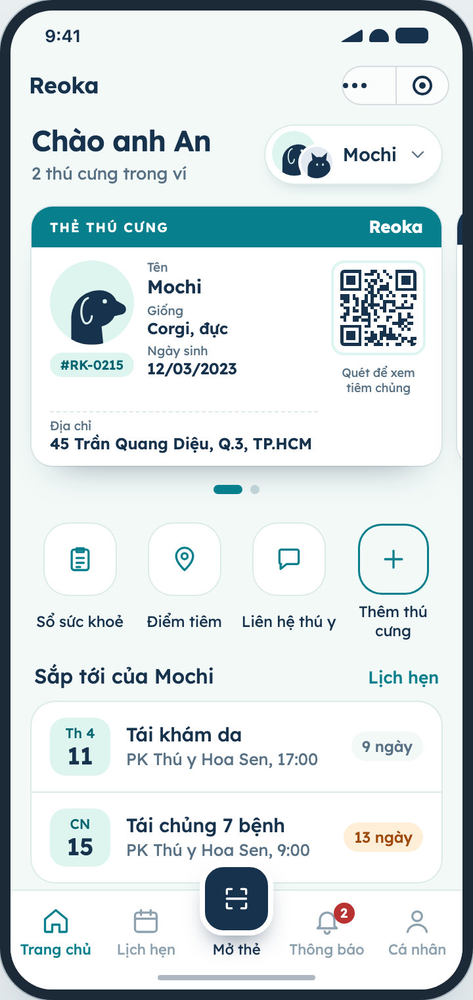
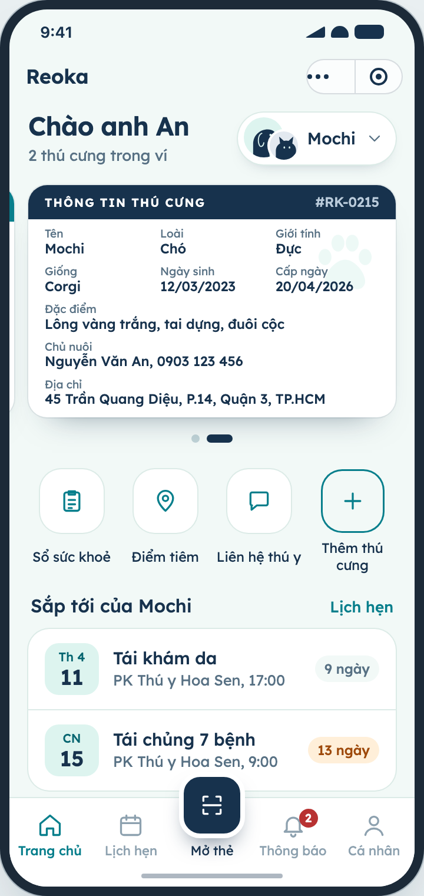
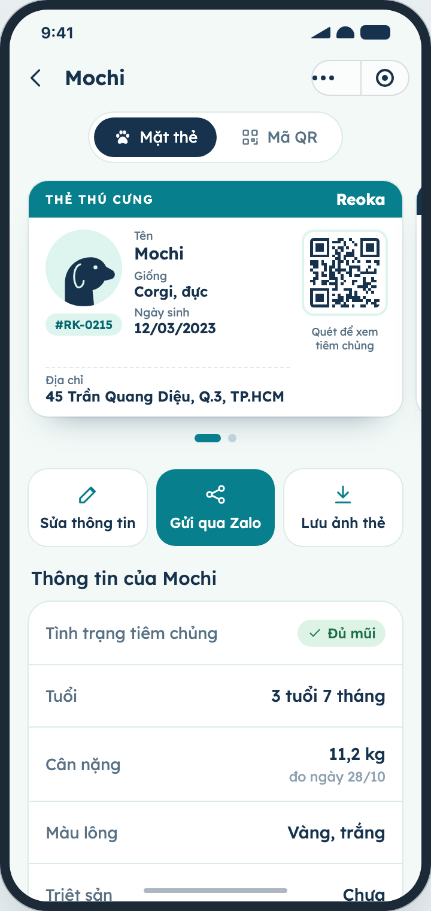

D · Kết hợp (selected)
The direction picked after review. B's look and tab bar, A's page layouts for home, pet detail, appointments and visit history, C's vaccination point finder and notifications, B's add flow, health book and clinic contact. The pet card keeps bank-card proportions (85.6 × 54 mm) and template A's card layout, and has two sides swiped with carousel dots: a simple front with address and QR, and a back with species, breed, sex, birth date, markings, owner, address and issue date.
What changed
- Home is the wallet: a quick switcher opens a sheet with every pet, “add pet” and archived pets
- Pet detail toggles between the card and a large QR
- Removing a pet offers archive (default) or permanent delete
- 17 screens; cards and toggles are interactive
Build notes
- Two-sided card is a scroll-snap carousel, not a 3D flip, so it stays cheap on Zalo
- Card back reuses the same data fields as the add/edit form
- Add and edit share the same two screens


